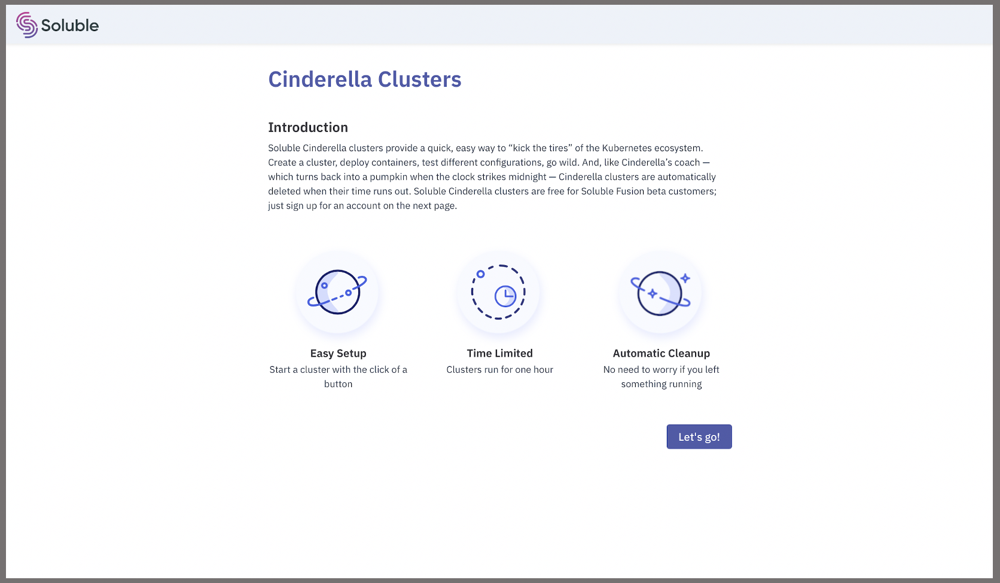
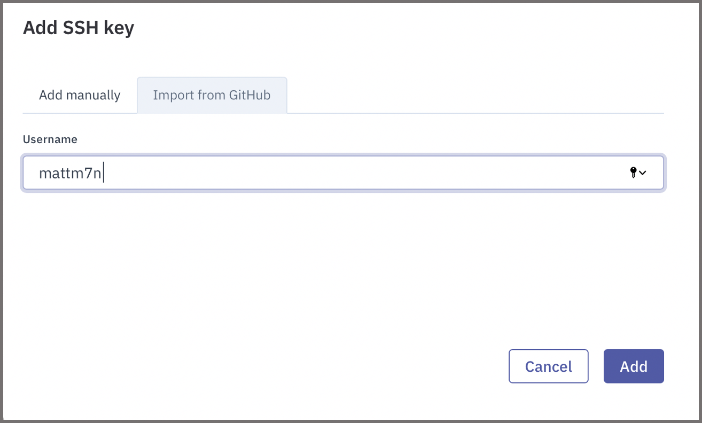
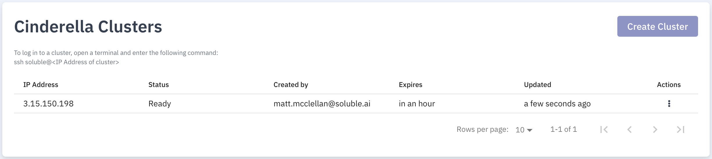
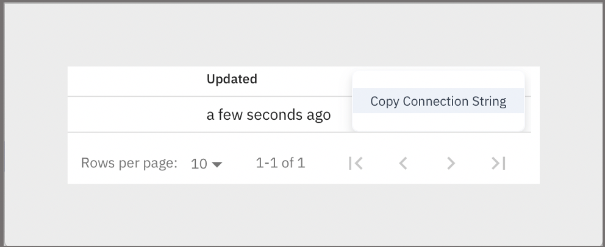
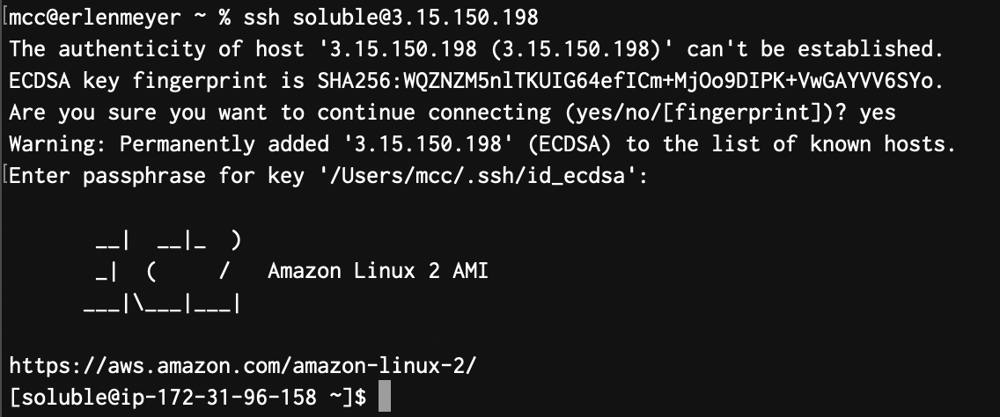

Cinderella clusters
Soluble Cinderella clusters provide a quick, easy way to explore the kubernetes ecosystem. Create a cluster, deploy containers, and test different configurations. Cinderella clusters are automatically deleted when their times run out.
Try Cinderella
-
You won’t have to do this every time you start a Cinderella cluster. Click on the link

-
Click on "Let's go!" to get started.
-
Next we need to import one (or more) SSH public keys so we can log in to the node running the cluster. If you have a GitHub account with SSH public keys, Soluble can just import those. That’s what we’ll do here:

-
After clicking on
Add, the keys are imported, and we’re taken to the loading page. It takes about a minute for the cluster to spin up. When the cluster is ready, you’ll receive a notification in the upper right corner. When you clickContinue, you’ll be taken to the Cinderella Clusters page:
-
Next, we’ll log in to the node running the cluster via SSH. To make this easy, we can copy the SSH command to log in to the node by clicking on the three vertical dots in the Actions column of the row with our Cinderella cluster:

-
Next, open a terminal window, paste the command you copied at the prompt, and hit return. We’ll be asked to confirm the SSH key of the remote host and will get a prompt that looks something like:

-
Run the
kubectlcommand and explore the cluster.